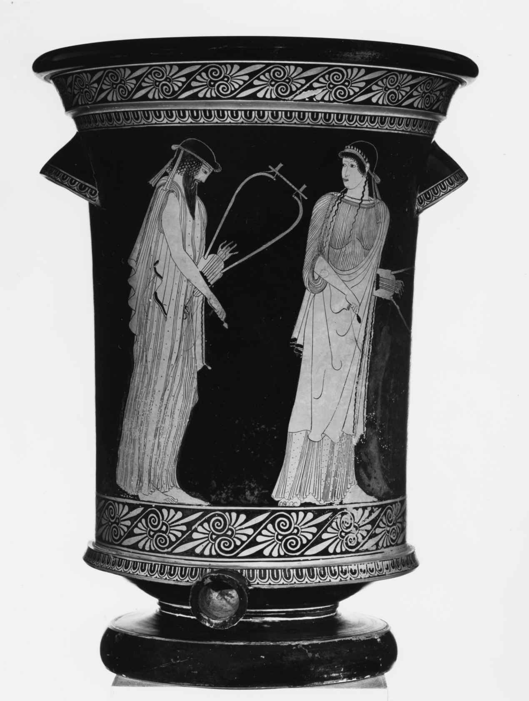

从早期希腊的抒情诗到罗马的爱情哀歌，本章将讨论各种类型的诗歌。这些纷繁多样形式的共同之处在于，它们都立足于说话者（即诗中的“我”）的世界，此人的想法和经历被凸显出来。虽说史诗和悲剧等文类通常关注的都是昔日神话世界，其中诗人的“我”只是偶尔会（例如在史诗中）或根本不会（例如在悲剧中）出现在瞩目位置，但本章的大部分诗歌似乎都源于说话者此时此地的情感和反应。
乍一看去，这类诗歌似乎是我们非常熟悉的。启蒙运动时期强调个人是对社会、政治和艺术起决定作用的因素，这种主张最终的成果就是浪漫主义观念，认为自发的真情实感才是最好、最真的诗歌的基础。华兹华斯在他的《抒情歌谣集》（1802）序言中对诗歌的著名定义，即“一切好诗都是强烈情感的自然流露”，就概括地指出艺术建立在诗人个体对世界的情感反应的基础上，这个观点的影响持续至今。不过，虽说古代抒情诗或个人诗都声称表达了说话者对世界的反应，而且毫无疑问，它也的确汲取了诗人（及观众）对爱情或战争（等等）的个人体验，但古代诗人的目标却不是反思他自己的经历，而是建构一个让观众觉得既可信又扣人心弦的第一人称（ persona ）。
换句话说，我们在阅读古代抒情诗或“个人”诗时，需谨防传记谬误。举例而言，上一章讨论过，赫西俄德为了写自己的教谕诗《工作与时日》，创造了抱怨不休的农夫和他的花花公子兄弟这两个角色。在抒情诗或个人诗中，我们会看到同样的过程更大规模地呈现，诗人们采用了五花八门的第一人称，但他们全都适用于诗人所选择的文类（例如阿尔基洛科斯的对骂歌）、表演情景（贵族酒会、公共节日等）以及叙述者的目标（不管是品达在合唱颂歌中赞美获胜的运动员，还是卡图卢斯哀叹情人的不忠）。
另一个应该提防的是，因为这些诗歌大部分是（或者声称是）“个人化”的，我们就会误以为它们没有那么传统，或者不那么关注与早期文学作品的互动了。这同样是一种现代观念：比方说，哲学家伊曼努尔· 康德就声称“在一切艺术门类中，诗歌是最高品级的。它几乎完全出自天才，极少受到规范或典范的指导”（《判断力批判》），表达了诗歌是纯粹的个人表达，不受文学规范和传统影响的观念；但古代诗人，不管是抒情诗人还是其他诗人，则恰好相反，他们对自己所写的文类及其历史始终有所关注。
先来看看古希腊抒情诗。这里的“抒情”一词是个笼统的词汇，因为它囊括了除史诗和戏剧之外的一切希腊早期诗歌，因而也就涵盖了各种各样的诗歌形式，展现出千变万化的人物角色。传统上把这些作品细分成更小的文类——短长格讽刺诗、哀歌以及抒情诗本身 [1] ，包括独唱诗和合唱诗（见下文）——但这不应该掩盖一个事实，即诗人可以自由地使用他或她认为合适的任何形式来创作：于是阿尔基洛科斯既写短长格讽刺诗也写哀歌，而萨福既写独唱诗（例如关于爱情的个人诗）也写合唱作品（例如婚曲）。所以说这些类别都是人工添加的，可能会掩盖不同形式之间的延续性，它们本身也是基于不同的特征——“抒情诗”基于歌曲概念，哀歌基于格律，短长格讽刺诗基于主题——但它们仍然能够帮助我们大致了解早期希腊的“歌曲文化”。
这些不同形式诗歌的主要表演场所是酒会和公共节日。酒会是上层阶级的饮酒聚会，精英阶层的男性可以在其间听到诗人吟诵，或者自己表演。他们会选出一位“中心人物”或“酒会主事者”，由他来决定酒的烈性（也就是加多少水），并负责确保酒会不致沦为耍酒疯的胡闹场面。女人也在场，但她们不是谁的妻子，奴隶和妓女们或许会提供音乐伴奏或其他服务——幸存至今的酒缸和酒杯上就生动地（色情地）描绘了后一种场景。与之相反，民间节日是公共节庆，整个社群不但会聚在一起享受动物献祭（在古代可不是每天都能吃得上肉，因而吃肉是一大乐事），也会欣赏竞技、音乐和诗歌比赛。
现在来看看抒情诗的亚类。短长格讽刺诗（iambus）一词的起源大概与在祭献德墨特尔和狄俄尼索斯（与性交和繁育等相关的神祇）的节日上表演的诙谐和粗俗诗歌这一传统类型有关。但现存的短长格讽刺诗的范围表明，这一文类的发展大大超出了宗教崇拜起源，而囊括了多种多样的主题和目的。嘲笑和谩骂是主要特征，与性有关的猥亵和露骨话语也是一样（例如，“杂种”一词只会出现在短长格讽刺诗中），但这些诗中也会出现动物寓言，以及道德和政治劝谕。短长格讽刺诗相对较为“粗鄙”或通俗的语域，使它成为传播民主政治的理想介质：因此雅典政治家和诗人梭伦（活跃于公元前6世纪初，后来被尊称为开创民主的英雄）就用短长格讽刺诗来为自己的政治和经济改革辩护，声称自己解放了那些因债务而沦为富裕主人之奴隶的雅典人（诸多成就之一）。
短长格讽刺诗的多样性在该文类的杰出代表人物阿尔基洛科斯身上得到了明显的体现，他的创作年代在公元前7世纪中期，在古代世界与荷马齐名，是最伟大的诗人之一。阿尔基洛科斯以其诽谤诗语言的鲜活和诙谐机智名扬四方，但他的嘲讽也会带上一种严肃的笔调，比如他在取笑“漂亮的好人”这一贵族典范时就表现出了这一点，那是一种将美、高贵和卓越全都混合在一起的意识形态：
（片段114） [2]
短长格讽刺诗将嘲讽看成是透过事物的表面揭示真相的手段，这里就把矛头对准了那位漂亮的贵族将军，他只不过看上去是个人物而已。
阿尔基洛科斯还利用观众对动物的了解，特别是利用他们都受到了动物寓言这一民间传说传统的影响这一点，创作了含有影射意味的精练意象：
（片段201）
如此处所示，阿尔基洛科斯往往会自比那个表面看来处于弱势，却最终打败了敌人的动物。刺猬“很管用的一个”计策就是蜷缩成一个满身是刺的球，诗人在其他地方明确指出了它与叙述者的相似性：
（片段126）
这里的意思很清楚：如果有人试图伤害阿尔基洛科斯，他不仅会保护自己，还会（像刺猬一样）针锋相对——他暗示说，其中就包括创作关于此人的诽谤诗。
阿尔基洛科斯最著名的诗歌系列之一关乎他与一位名叫吕坎拜斯的人及其女儿的关系。根据把诗歌解读为诗人自传的古代传统，吕坎拜斯曾把女儿内奥布勒许配给阿尔基洛科斯，但后来悔婚了。阿尔基洛科斯的报复手段就是声称自己与内奥布勒和她的妹妹都曾发生过性关系，由此毁了两个姑娘（说她们淫乱）及其父亲（说他违背誓言）的名声，以至于他们全家不堪其辱而自杀。在其中一篇诗作中，叙述者认为他的前未婚妻内奥布勒是个烂货（“她对许多男人来者不拒”），转而勾引她的妹妹（片段196a）。该诗结尾既直白又含混：“我使出一身蛮力，只碰了碰她金色的秀发。”这就为观众（酒会上微醺的男人或节日里喧闹的众人）制造了悬念，让他们好奇心大增，不但争相猜测到底发生了什么，还热切期盼着阿尔基洛科斯关于吕坎拜斯及其女儿的下一篇粗俗诗作。不过这样用讽刺诗来辱骂他人不仅很刺激，还暗含了古代希腊观众应知的基本道德价值观——比方说这里就包括守信、未婚女孩必须守住贞操的重要性，以及性约束（当然是对女性的约束，这符合父权社会的双重标准）的价值观。
短长格讽刺诗的核心特征是内容而非韵律形式，哀歌（elegy）则不同，它包括以哀歌式对句写成的所有诗歌，是整个古代最受欢迎的诗歌形式之一。希腊哀歌通常是在阿夫洛斯管（aulos ）的伴奏下演唱的，这是一种形似双簧管的乐器，由同一位乐师（阿夫洛斯管乐师）同时吹奏两根。切记不要把“哀歌”理解为现代的挽歌或挽诗，因为虽然它在古代的确与悼词和祭文（即其现代定义的起源）有关，但哀歌是一种非常灵活的形式，用于表现千变万化的主题，从神话或历史叙事，到酒、女人（外加男孩）和歌曲这类酒会上的永恒主题。
和写作短长格讽刺诗的阿尔基洛科斯一样，哀歌诗人也使用各种不同的第一人称来满足表演场合和观众的需要。最突出的实例之一出现在公元前7世纪末的诗人泰奥格尼斯的哀歌中，诗人扮演的角色是一个心怀怨恨的贵族，在亲民主的革命中失去了地产，被迫流放，正在计划复仇。泰奥格尼斯对着他那位年轻的男性情人基尔努斯喃喃低语，敦促后者聆听和牢记。典型的抱怨如下：
（第53—58行）
泰奥格尼斯的诗歌刻画出古风时期整个希腊的贵族群体的焦虑，民主政体的兴起或蛊惑民心的政客对他们的统治构成了威胁，后者依靠大众的支持掌权，但随后就把自己变成了暴君。泰奥格尼斯为现有的特权辩护，憎恶粗俗者和新贵（nouveaux riches ），这些让他的哀歌在贵族酒会上大受欢迎。在酒会上表演那些诗歌有助于培养群体和阶级凝聚力，让他们共同面对威胁自身地位的变革。
凝聚力的创造也是提尔泰奥斯的军事哀歌的重要元素，这位公元前7世纪中期的斯巴达诗人敦促他的斯巴达同志们誓死保卫自己的城邦和人民：“英勇杀敌为祖国而战/死于前线最美好……”（片段10，第1—2行）提尔泰奥斯的诗歌强调失败是可耻的，胜利是光荣的，反映了斯巴达社会残忍的军国主义，即便以古代的标准来看，其暴虐也非同寻常。提尔泰奥斯的时代之前大约50年，即公元前8世纪末，斯巴达曾经征服了他们附近的美塞尼亚人（同为希腊人），并把后者变成“赫洛特”（即“被俘之人”），整个民族被永久奴役。他们的强制劳动既使斯巴达的军事化社会成为可能，又让它变得必要，前者是因为斯巴达人无须劳动，可以做全职士兵，后者则是为了消灭持续存在的奴隶起义的危险。提尔泰奥斯写被奴役的美塞尼亚人“像驴子一样，被身上的重负压垮”（片段6），他的诗歌写于又一场奴隶起义之后的所谓第二次美塞尼亚战争期间，宗旨就是要维护征服成果，强化斯巴达社会的军国主义价值观。在其后数个世纪里，他的军事哀歌始终激励着斯巴达军队英勇战斗。
传统上把其他诗歌（也就是既非短长格讽刺诗又非哀歌的诗歌）都称为严格意义上的“抒情”诗，并根据它是由合唱队还是独唱歌手表演，再把它进一步分为合唱抒情诗和独唱抒情诗。不过有时并不清楚一首诗是为独唱还是合唱而作，而原本的合唱抒情诗自始至终都可以由一个独唱歌手重新表演（例如在贵族酒会上）。无论如何，既然这种诗歌都是在阿夫洛斯管、里拉琴或其他弦乐器的音乐伴奏下吟唱的，它的主要特点就是音乐与歌曲至关重要（当然在合唱诗中，舞蹈也很重要）。
最著名也最迷人的抒情诗人或许当属萨福，她于公元前7世纪末在莱斯博斯岛上写作。萨福是古代最伟大的女性作家，被古代的仰慕者们誉为“第十位缪斯”。她写过各种形式的合唱诗，包括婚礼歌曲和献给神祇的赞歌，但她最有名的诗还是那些关于爱情，特别是女人之间的爱情的独唱诗（多半是独唱诗）。人们往往会说萨福与她的女性圈子的公开情爱关系也实现了某种教育目的，她的“学生们”能够学到许许多多的活动，包括音乐、装饰和宗教仪式等，为日后为人妻、为人母做好准备。在这一模式下，萨福的圈子被认为是与男同性恋通过仪式相当的女性活动，现存的很多资料都能证明，在古风时期和古典时期，这种男同性恋通过仪式在希腊其他地方的年轻男子中非常盛行。
另一种情况是，她的那些关系可能就是单纯的情爱关系，不需要声称有什么教学目的。（换句话说，萨福的受话者们可能是她的一连串女性情人，不一定是某个体制内群体的成员。）无论如何，有一点很清楚，萨福的诗赞美的是女性之间肉体上的亲密关系和爱欲。例如在一首诗中，她安慰一位即将离别的情人，回忆起“你在柔软的床榻上满足你的渴望”（片段94，第21—23行）。维多利亚时期把萨福塑造成（贞洁的）女家庭教师形象，压抑了这些被认为有害的同性恋元素，不过奇怪的是，相关的男性学者——他们中的许多人都曾在寄宿学校接受教育——倒是不难接受古希腊有一个年轻男性同性恋活动频繁的时期。
许多男性抒情诗人与男女两性各色各样的情人尽享欢愉，但他们没有一个像萨福那样，坚信爱是人生中最不可或缺的东西：
（片段16，第1—4行） [3]
这里，叙述者的观点与“男性”崇尚军功荣耀的价值观公然对抗，而另一首诗则剖析了说话者看到自己心爱的人与一个男人在一起时，心中的妒忌和绝望（片段31）。让我们伤心的是，萨福只有一首诗完整地保留至今，她在该诗中向阿芙洛狄忒祈祷，请求女神帮助她克服一个对她的爱不予回应的女人的抗拒（片段1）。然而萨福诗歌的碎片化恰恰突出了她的意象的微妙质朴和摄人心魄的美感，于是就有了下面这些例子：“爱摇动着我的心房，像一阵风落在山间的橡树上”（片段47），“让我浑身无力的爱神再度令我颤抖起来，那酸苦又甜蜜，谁都无法抗拒的精灵啊！”（片段130），还有（关于她自己的女儿）“我有一个好女儿，她的模样好似/金花几朵，我爱的克勒斯”（片段132，第1—2行） [4] 。
合唱抒情诗是由古代希腊社会的各个阶层参与演唱和舞蹈的（一般来说，已婚女人、少女、男人和男孩各自在不同的合唱队表演），合唱的集体合声扮演一个重要角色，就是表达参演演员及观众群体的价值观。合唱表演是宗教礼拜和节日庆典中必不可少的部分，从婚曲到葬礼上的挽歌，它标记了一个人一生中的许多重大事件。比起独唱抒情诗，合唱诗歌所书写的场面要大得多，风格也更为崇高，使用精心构思的韵律、复杂的句式、华丽的辞藻和大胆的比喻。
现存的最大一部合唱抒情诗集是品达所作的40首凯歌（或epinikia ，即胜利曲）全集，都是诗人在公元前5世纪上半叶为赞美四大运动会（其中最著名的就是奥林匹克运动会）的获胜者所作。委托品达创作凯歌的获胜者来自希腊语世界的各个角落，却因为都渴望用诗歌让自己的胜利名垂千古而走到一起。有些构思不够精妙的凯歌或许是在运动会之后不久的节日上创作和表演的，但大部分都是为了在胜利者返回故乡城邦时表演而作，胜利者的家人会保留诗作的副本，以便在未来数年里反复表演（只不过不一定像首演时那样，由大型歌舞团体来演出）。
品达因风格华丽而备受美誉，在现代人看来，他的诗作可能会显得古怪和夸张，但委托者们觉得要纪念他们伟大而耀目的成就，那样的风格再合适不过了。那些凯歌除了交代委托者或其家人此前所获胜利等个人经历之外，一般还会记述某个神话事件（往往与胜利者故乡所在的城邦有关），神话的细节会被精心构思，这些诗歌宏大的赞美修辞也是一样，从而突出胜利者能够获得成功的各种要素——天生的能力、刻苦训练、有德行的雄心抱负、众神的支持等。现代人看到这些颂歌强调天赋异禀和胜利者超乎常人大概又会犹疑不定，但品达的保守观念反映和强化了他那些有权有势的委托者的贵族世界观。品达认为，运动员在神的帮助下获得胜利的那一刻，人超越了生命的短暂易逝而获得了永恒：
（《第八首皮托凯歌》，第95—97行） [5]
然而当人的潜力得以实现，诗人同时告诉我们，成功可能会激起妒忌，或许是他人的羡妒，又或许是诸神的嫉恨，所以这些凯歌也用冷酷的笔调（在我们听来很是意外）重申人类生命易逝、力量有限，这也能保护胜利者免受随胜利而来的诸多危险。
按照罗马哲学家和剧作家塞涅卡的说法，“西塞罗说即便他的生命延长一倍，也不会有时间阅读抒情诗人的作品”（《道德书简》49.5）。还好，其他很多罗马人更喜欢抒情诗，拉丁文学也有很多抒情诗和个人诗可与希腊诗相媲美。其中最出类拔萃的或许要属卡图卢斯，他在共和国末期（公元前1世纪60年代—前1世纪50年代中期）写作，虽然作品不多（只有116首诗），但它们呈现出种类繁多的诗歌形式和风格，从微型史诗和宗教赞歌到滑稽模仿文学作品和社会政治讽刺作品。但他的作品中最受欢迎的，还是关于他与一位他唤作莱斯比亚的已婚女人之间私情的那些诗作。这25首诗（大部分是短诗）中有关于他们关系的浮光掠影，却没有列出时间顺序，需要由读者把他们的私情故事拼接起来，从卡图卢斯最初的热恋和狂喜，直到当他知道除他以外莱斯比亚还跟其他男人上床时，心中的幻灭和恨意。
许多读者愿意相信这场情事，还去寻找文学化名“莱斯比亚”（暗指萨福，她就来自莱斯博斯岛）背后那位真正的女人是谁，这些都证明了卡图卢斯的诗歌艺术化的真情实感和表面上的真诚，下面这两句诗就是一例。卡图卢斯知道莱斯比亚的本性后，对她的渴望依然不可遏制，诗人只用短短两行，便将他此时的心理斗争生动地表现出来：
（第85首）
然而这一传记观点的问题就在于，它不仅忽略了这段关系的文学背景，在文学背景中发生的事件是对早期文学（特别是艳诗）的再加工，同时也会掩盖卡图卢斯叙事所隐含的性成见和意识形态，即男性诗人/叙述者可以随便通奸，却谴责他的女性同伴生活淫乱。也就是说，和他以前的希腊抒情诗人一样，卡图卢斯创造的第一人称所表达的个人感情和浓浓爱意既不难识别，又引人入胜。在莱斯比亚系列诗中，卡图卢斯的说话者是个一心一意却又遭到背叛的情人，一个永远都是受害者、把一切道德缺陷归咎于另一方的男人。于是，举例而言，他把他们的关系描写为“这神圣友谊的永恒盟约”（aeternum hoc sanctae foedus amicitiae ，第109首，第6行），掩盖了他自己也是通奸一方的事实，好像他的角色只是遭到莱斯比亚背叛的受害者。
卡图卢斯显然有意要让这类诗歌在罗马语境下惊世骇俗，不仅赞美奸情，还鼓吹了这样一种生活方式：拒绝传统的事业，却为充斥着爱和欢愉的生活大唱赞歌，既不像男人，也不像罗马人。卡图卢斯以自己的方式爱着莱斯比亚，公然藐视所有一本正经又根本不得要领的老式罗马人：
（第5首，第1—3行）
而通过这样一个违背传统罗马一切道德规范的蛮横角色来取悦读者，卡图卢斯为下一代罗马作家创作的罗马爱情哀歌这种艳诗体裁铺平了道路。
科涅利乌斯· 伽卢斯心爱的吕科丽丝、普罗佩提乌斯笔下的辛西娅、提布鲁斯的德利娅和涅墨西斯，以及奥维德的科琳娜，全都受到了卡图卢斯在莱斯比亚系列诗歌中发展出来的痴缠、妒忌和浪漫理想主义模式的影响。但这些诗人也各自杜撰了自己的哀歌情人的角色，并以自己的方式探索了这种文类的可能性。例如，在公元前1世纪20年代写作的提布鲁斯就把自己的爱情想象世界设置在乡间，而非卡图卢斯、普罗佩提乌斯和奥维德的城市世界。乡村场景让人可以逃离罗马城的压力，享受到浪漫的田园生活，在那里，提布鲁斯及其读者可以尽情展开罗马人对简朴的乡间生活的美好想象。普罗佩提乌斯在他的四卷诗集中逐渐拓展这一文类，吸收了各种主题，如罗马政治和历史，从而让哀歌回归了它的希腊本源——在古希腊，哀歌本是一种非常灵活的形式。他心爱的辛西娅占据了前两卷本的大幅篇章，他在第三卷结尾处与她（以及他自己的爱情诗人生涯）告别，但她在第四卷中又回来复仇了——甚至从阴间回来，她的鬼魂出现在普罗佩提乌斯的梦里，谴责他不忠。奥维德的哀歌作品有时被称为“戏仿作品”，因为他有意识地（且高调地）戏弄爱情哀歌的传统——什么被关在门外的情人、奴隶从中做媒、富家子情敌等——不过我们还是要小心，把“戏仿作品”和“解构”等词语用在奥维德身上时，不能忘记在卡图卢斯、提布鲁斯和普罗佩提乌斯的笔下，情人的角色也同样是艺术创作，是建构而成的。
因此，他们的女性情人不光有文学化名，也象征着爱情诗本身的传统，以及诗人对该传统所做的贡献。和卡图卢斯一样，其他诗人也都被各自不忠的女友辜负了，那些女人不光美丽、热情、喜怒无常，而且饱读诗书——这同样是暗指她们的文学角色。哀歌的许多传统，比方说爱情就像战争，充满了争斗和苦难，或者甘心为情人所奴役等观念，都被哀歌诗人拿来加以修改，以使他们的罗马读者感到惊心动魄、欲罢不能。因此普罗佩提乌斯宣称爱情比守护家人和保家卫国更加重要，而提布鲁斯谴责贪婪和权利政治带来了战争：“爱是和平之神，我们这些以爱为生的人崇尚和平，”普罗佩提乌斯如是说（3.5.1），早早就为后世的叛逆者们“要做爱，不要作战”的理想主义宣言埋下了伏笔。而如果说卡图卢斯对任性又不忠的莱斯比亚的痴迷看似要逆转现行性别角色中的权力关系，哀歌诗人们则更加出格，公然纵情于为爱所“奴役”的自我贬低——在一个像罗马那样的奴隶制社会里，这可是个令人震惊的形象，要知道罗马的奴隶不过是其男女主人的活工具。他们放弃自主权的状态有时简直像受虐：
（提布鲁斯，《哀歌集》2.4.1—6）
就这样，罗马的（男性）读者享受到了丧失权力和自控力所带来的震颤，这两样是他的个人身份不可或缺的部分。后来的罗马人很为拉丁语爱情哀歌诗人而自豪——昆体良宣称，“我们的哀歌也能与希腊人媲美”（《论演说家的教育》10.1.93）——可以说，这些诗人成功地创造了一种和讽刺文学作品（见第八章）一样独具罗马特色的文类。
如果说“罗马化”是衡量拉丁语作者成功地继承希腊先辈衣钵的主要标准，那么贺拉斯在《长短句集》和《颂诗集》中为罗马读者彻底改写希腊讽刺诗和抒情诗，就必须与维吉尔在同一个动荡时期改革史诗的功绩相提并论了。《长短句集》作于公元前1世纪30年代，吸收了希腊讽刺诗的广泛主题，使之适用于深陷内战旋涡的罗马——如上所述，那些主题不仅有辱骂，也包括各种各样的社会政治论述。例如《长短句集》的第7和第16首大概作于公元前1世纪30年代初，其中贺拉斯敦促他的罗马同胞放弃疯狂自毁，但诗人明智地给自己留了一条退路，没有言明自己在内战中的立场。与之相反，在写于公元前31年亚克兴角决战之后的《长短句集》第1和第9首中，贺拉斯赞颂了他的朋友和赞助人梅塞纳斯在战斗中的功勋，相信了奥古斯都政权的宣传，即这场战争是为了反对腐败的外国敌人克莱奥帕特拉及其对马克· 安东尼等弱者影响的正义之战，而不是罗马君主们争权夺利的内战。
然而贺拉斯在抒情诗领域最大的成就，当属他的四部《颂诗集》，它们继承了希腊抒情诗的复杂传统（从古风时期到希腊化时期的各种风格），为奥古斯都时期罗马那个知识渊博的文学世界重新创造了抒情诗的音乐和主题多样性。心怀远大抱负的贺拉斯在四部诗集的第一首诗中就宣称，他的目标是要把自己的名字加在亚历山大时期九大抒情诗人 [6] 的正典中：
（《颂诗集》第一部，第1首，第35—36行） [7]
在第三部（前三部是公元前23年一同出版的）的最后一首诗中，他骄傲地重申自己光荣地成为首位拉丁语抒情诗人，也就是第一位用希腊抒情诗的艰深格律创作拉丁语诗歌的诗人：
（第三部，第30首，第12—14行） [8]
因此，第一部的前九首诗歌都是用不同的格律写成的，展示了贺拉斯为了适应复杂的非本土传统而改造拉丁语的前无古人的技巧。此外，贺拉斯坚信音乐和表演的重要性，也突出了他作为一个重要的公共诗人这一新的地位。因为和他所效仿的古希腊典范不同，贺拉斯的《颂诗集》并没有拘泥于某一个特定的表演地点，而是主要为诵读而作，然而他反复提到音乐、歌手、诗人的里拉琴、他的观众等，所有这些共同制造出一种表演的幻觉，创造出一种真情流露和共同体验的感觉（就像是在贵族酒会或公共节日中那样），并突显出贺拉斯诗人地位的提升——和他的希腊先辈们一样，他有权为自己所在社会的公共生活发声。
《颂诗集》反映了当时罗马社会的方方面面，从宗教赞歌到关于友谊、爱情和政治的诗歌。和希腊抒情诗一样，贺拉斯诗中的第一人称也是根据主题不断变化的，有时是吟唱宗教和政治颂歌的庄重的祭司——诗人，有时又是酒会上慈爱甚或不失滑稽的哲学家，随时给出智慧的箴言，有些色情，有些抽象：
（第一部，第11首，第6—8行） [9]
贺拉斯从希腊抒情诗传统的每一位伟大人物那里汲取营养，他熟读的诗人千差万别，迷人如萨福，华丽如品达，但贺拉斯最频繁地给予认同的诗人当属阿尔凯奥斯（与萨福同时代生活在莱斯博斯岛上，见图3），因为他既是著名的政治和战争诗人，也写了大量关于友谊、爱情和美酒的诗，因而最能体现贺拉斯抒情诗的广泛主题。

图3 冷酒器上的一幅雅典红彩绘画，大约创作于公元前480—前470年，画上的人物为来自莱斯博斯岛的两位著名抒情诗人阿尔凯奥斯和萨福，他们正在为彼此表演
《长短句集》中反映的政治革命仍然是《颂诗集》的核心主题，贺拉斯既同情为共和国的事业献出生命之人，也无数次表达了对奥古斯都结束了内战并试图逆转罗马世风日下面貌的感激。诚然，停止内战而不再重蹈覆辙是四部诗集的一个主旋律。此外，和维吉尔的《埃涅阿斯纪》一样，我们看到诗中既有希望又不乏焦虑：希望奥古斯都“返璞归真”的道德和宗教改革能够成功，却又害怕再次回到内战。因此，贺拉斯反复强调罗马社会的堕落：
（第三部，第6首，第46—48行） [10]
毁灭看似不可避免——除非，诗人暗示道，《颂诗集》中的建议被世人采纳。换句话说，贺拉斯（和维吉尔一样）并非单纯地在歌颂奥古斯都和他的政权，也试图为它指明方向。因此《颂诗集》以其惊世骇俗的诗歌技巧和主题远见，跻身拉丁文学最出色的作品之列。事实证明，贺拉斯骄傲的自夸（前三部的结尾处）实至名归：
（第三部，第30首，第1—5行） [11]
[1] 抒情诗（lyric）一词源自希腊文lura ，即里拉琴（古希腊U形拨弦乐器），所以音乐寓意明显，也就是一种配乐吟唱的诗歌。一直到罗马时期贺拉斯的诗作，它才逐渐与音乐分离，变成无乐的诗文。此处的“抒情诗本身”意指有音乐伴奏的抒情诗。
[2] 译文引自水建馥译，《古希腊抒情诗选》，人民文学出版社1988年版，第53页。
[3] 译文引自水建馥译，《古希腊抒情诗选》，人民文学出版社1988年版，第123页。
[4] 译文引自水建馥译，《古希腊抒情诗选》，人民文学出版社1988年版，第126页。
[5] 译文引自娄林：《城邦与诗人——品达第八首皮托凯歌解读》（中山大学博士论文）。
[6] 亚历山大的学者们按照诗歌的韵律对诗人们进行分类，归纳出值得重点研究的古希腊九位抒情诗人，分别是阿尔克曼、萨福、阿尔凯奥斯、阿那克里翁、斯特西克鲁斯、伊比库斯、西莫尼德斯、品达和巴库利德斯。
[7] 译文引自李永毅译注，《贺拉斯诗全集：拉中对照详注本（上）》，中国青年出版社2017年版，总第511页。
[8] 同上书，总第2079页。
[9] 译文引自李永毅译注，《贺拉斯诗全集：拉中对照详注本（上）》，中国青年出版社2017年版，总第615页。
[10] 译文引自李永毅译注，《贺拉斯诗全集：拉中对照详注本（上）》，中国青年出版社2017年版，总第1795页。
[11] 同上书，总第2079页。